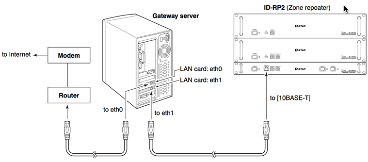

D-Star Modules
One or more of the following:
- ID-2000V 144MHz Digital Voice repeater
- ID-RP4000V 440MHz Digital Voice repeater
- ID-RP2V 1.2GHz Digital Voise repeater
- ID-RP2D 1.2 GHz Digital Data
Here is the basic layout of a D-Star repeater, from the Icom setup guide:
